Design portfolio
File Manager Design Portfolio
Two collections of high-fidelity file-manager screens. The first starts from a different premise than folders: a file has memberships, not a location, so it can sit in a project, a client, a deadline and a person's week at the same time. The second takes the conventional file manager and does it well.
Innovative: files that live in many places
10 designsEach screen makes multi-home membership visible and easy to shape. Every one is a full product screen at 1440 × 900; open a card to see it at full size with the concept explained.
-
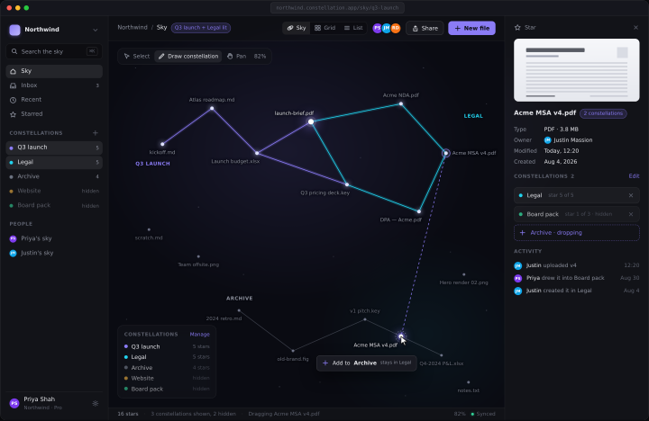
01Constellation
Files are stars. A collection is the shape you draw between them, and one star can sit in as many shapes as you like.
-
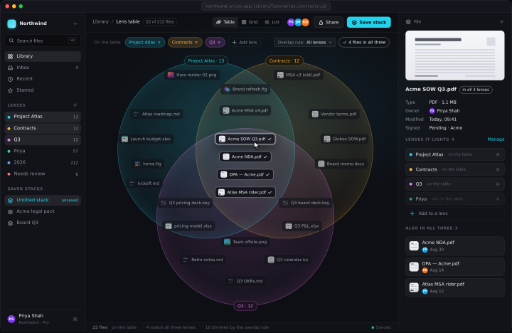
02Prism
Every tag is a translucent lens. Stack them and the files you want are where the colors overlap.
-
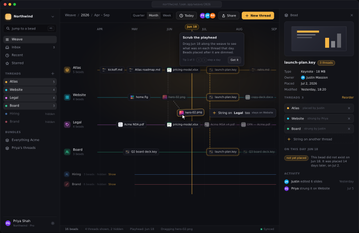
03Loom
Time runs left to right, projects are threads, and a file is a bead that can be strung on several threads at once.
- Open the prototype ↗
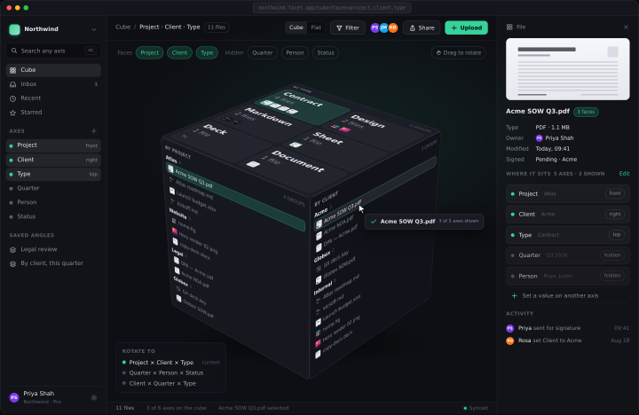
04FacetInteractive
One set of files on a cube. Each face groups them by a different axis, and rotating the cube is how you refile.
-
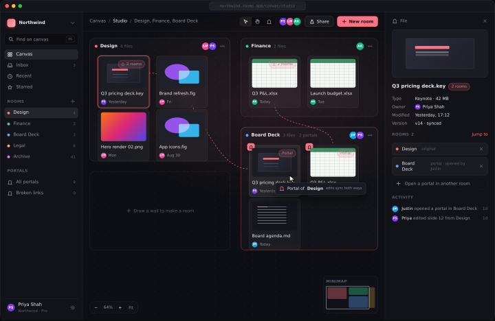
05Rooms and Portals
An infinite canvas carved into rooms. A file placed in one room can open a portal into any other, and both ends are the same file.
-
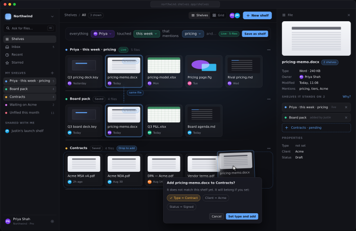
06Shelves
Finish a sentence and it becomes a shelf. Files keep landing on every shelf whose sentence is true of them.
-
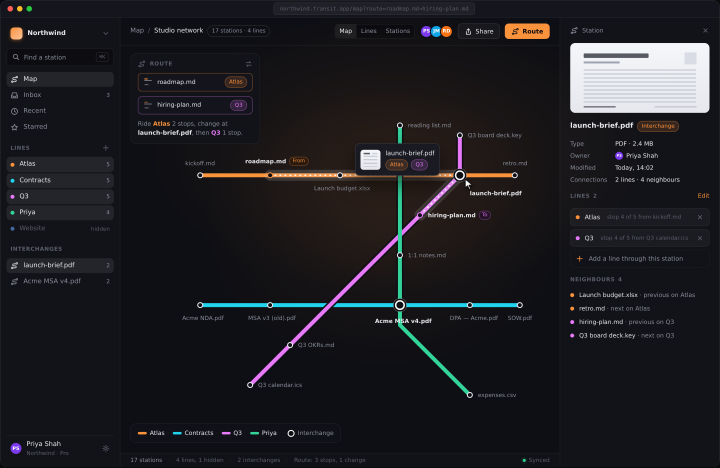
07Transit
Collections are colored lines, files are stations, and a file in several collections is where you change trains.
-
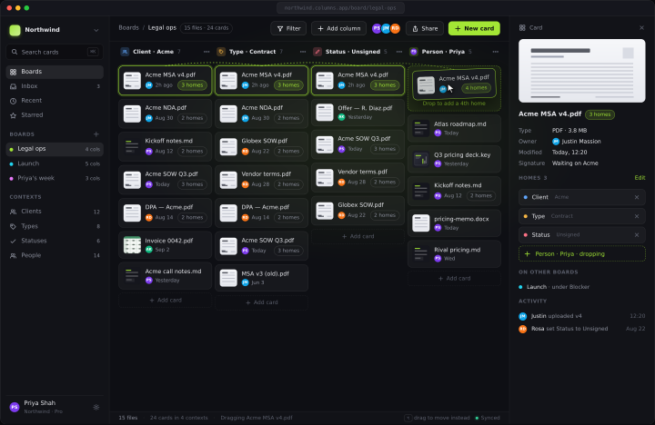
08Columns of Context
A board where every column is a context, and moving a card never removes it from where it already was.
-
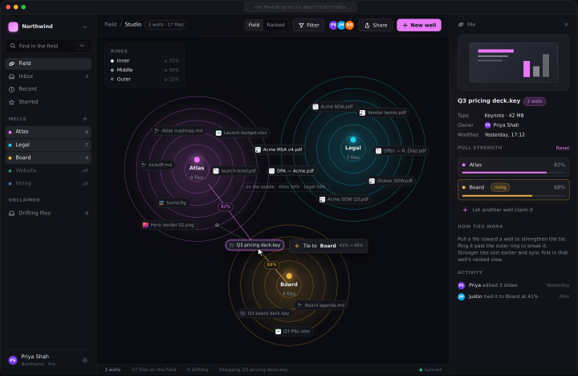
09Gravity
Collections pull. Files settle where the pulls on them balance, and how far they sit from a well is how strongly they belong.
-
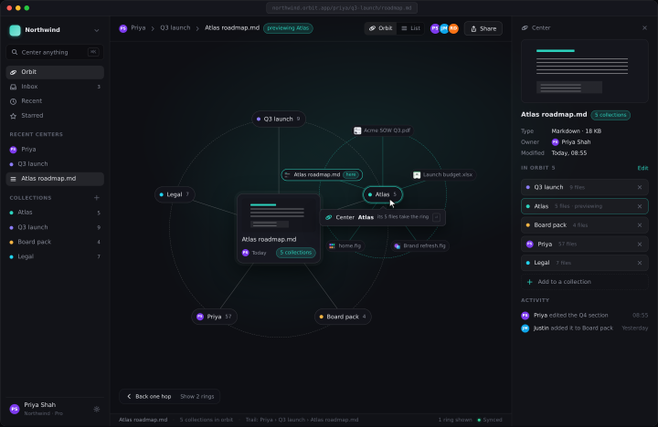
10Orbit
Center anything and everything it belongs to orbits it. Click a satellite and it becomes the center.
Classic: conventional file managers, done well
5 designsFamiliar shapes, folders, lists, columns and panes, executed with the same attention to hierarchy, density and detail as the concepts above.
-
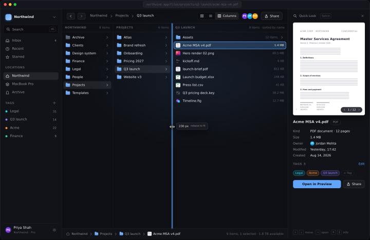
11Ledger
Three cascading columns and a Quick Look pane. Where a file lives is always on screen, and the keyboard never leaves the list.
-
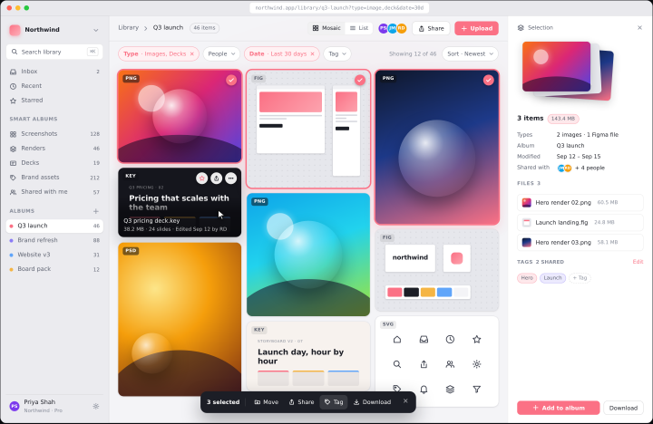
12Mosaic
A visual-first grid for creative teams. Big thumbnails, filters as chips, and a floating bar for whatever you have selected.
-
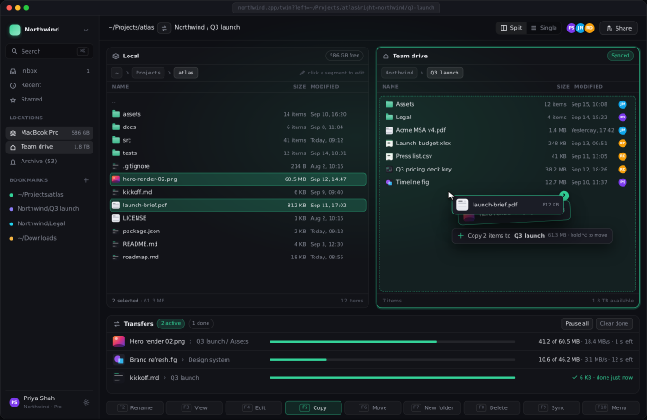
13Twin
A dual-pane commander for power users. Local on the left, team drive on the right, and a transfer queue that never blocks you.
-
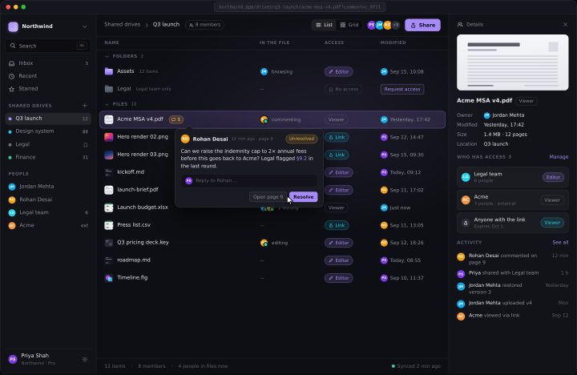
14Crew
A shared drive built for people, not paths. Who is in a file, who can see it and what changed sit right on the row.
-
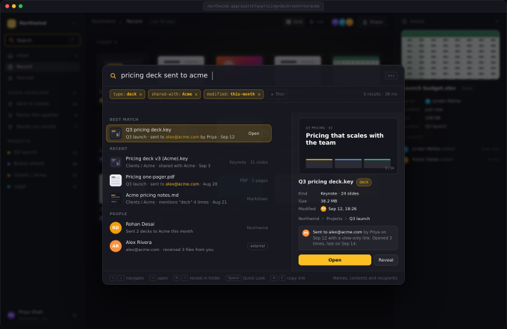
15Lens
Search first. Type what you remember, the palette turns it into filters, and the top result is one keystroke from open.
Interactive prototypes
Beyond the cube
Facet as a working cube, and the three directions from its tour built for real over the same files: Tesseract slides the cube through the quarters, Polyhedron gives every axis a face on a rolling solid, Nested cubes open a group into its own child cube.
See the four prototypes


Versions
- v1Ten concepts as annotated diagrams.superseded
- v2Rebuilt as full product screens at 1440 × 900.
- v3Refined all ten innovative screens (one gesture per screen, reconciled counts, unified product chrome, status bar), added the Classic collection (Ledger, Mosaic, Twin, Crew, Lens), published on GitHub Pages.
- v4Interactive Facet prototype with Ledger comparison and guided tutorial: prototype/facet/, a real CSS 3D cube over one shared dataset, a Miller-column Ledger of the same files, a Compare drawer with live demos, and a draggable tour.
- v5Beyond the cube: Tesseract, Polyhedron and Nested cubes prototypes, with a prototypes hub, a shared dataset with twelve axes and four quarters of history, and a shared cube engine, tour and chrome under
prototype/shared/.current